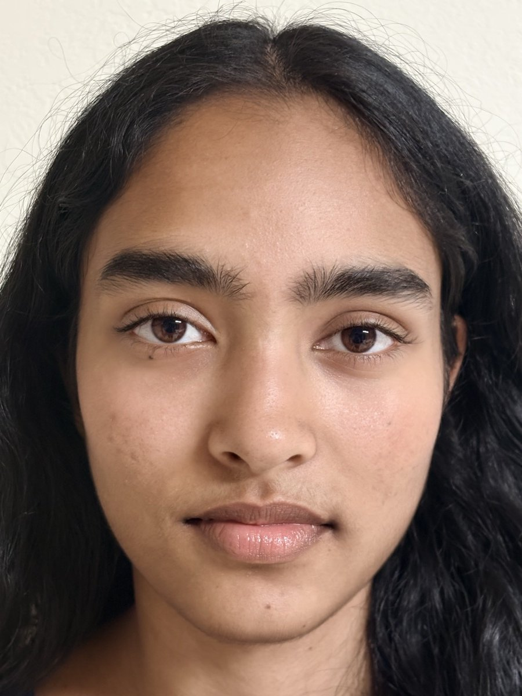
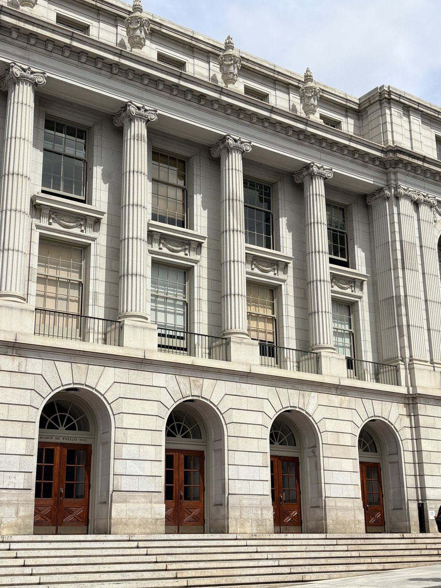
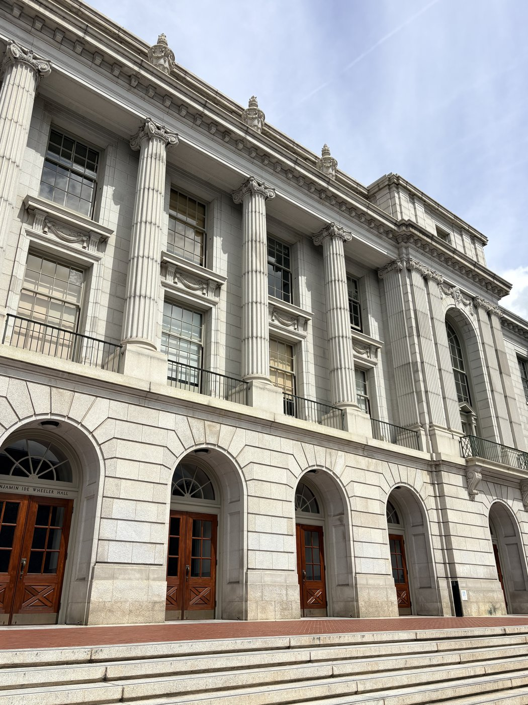
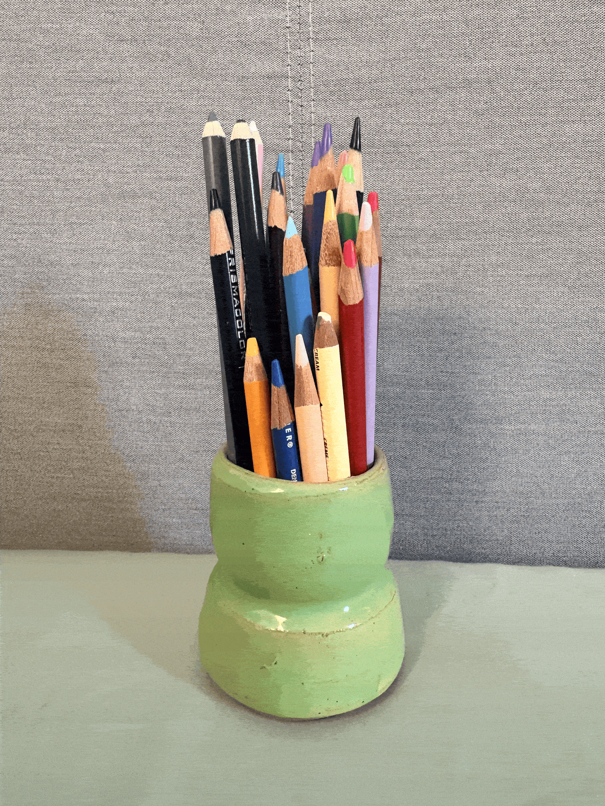

project 0
becoming friends with your camera
Part 1: Selfie: The Wrong Way vs. The Right Way

Part 2: Architectural Perspective Compression


Part 3: The Dolly Zoom

becoming friends with your camera



